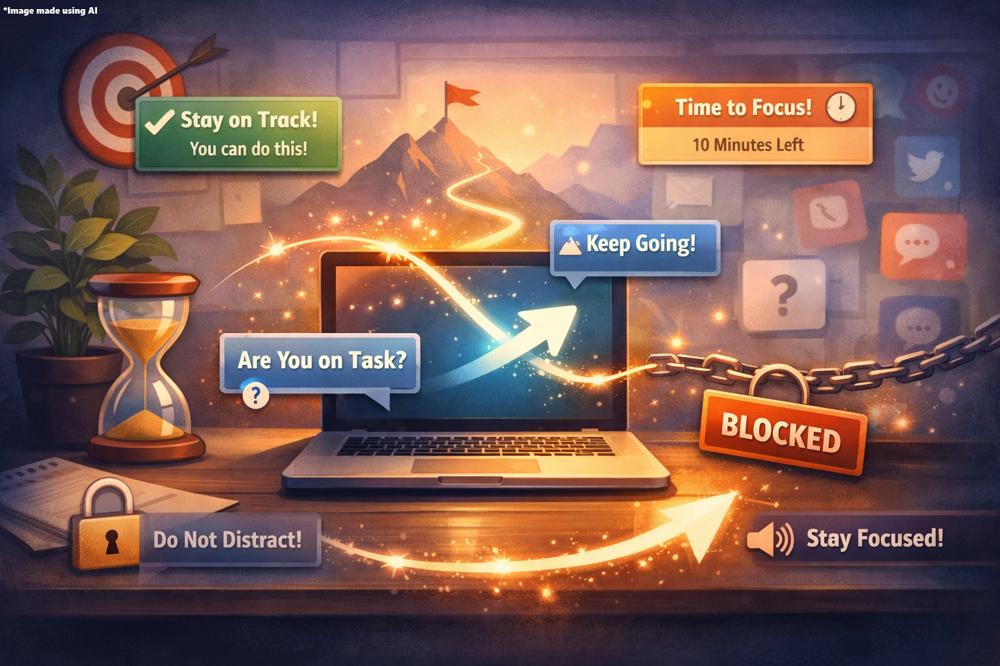
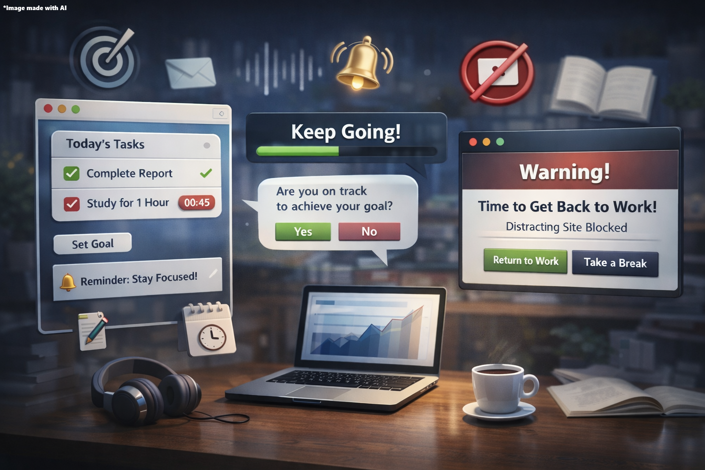
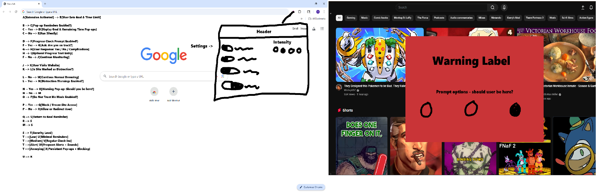

Problem
In an increasingly, fast paced society we find ourselves to be in, it can sometimes be challenging to keep one’s main task or goal in mind. This is especially true for those who attract unwanted distractions. While eliminating any chance of distractions to occur is a hefty challenge, it is an arguably unreasonable standard. Instead, there needs to be some sort of tool that can help reduce the chance of a distraction in addition to being able to redirect its user back on track in the event of one occurring.
Innovation Claim
This extension would be designed to pull you back on track when distractions creep in. It uses short, motivational pop-up reminders tied to your goals and time limits, while optional anti-distraction features prevent you from endlessly continuing off-task behavior. Users can control how strict it is, from gentle nudges to firmer interventions, all in one clean, easy-to-navigate extension. It’s everything you need to stay focused, without juggling multiple productivity tools.

Project Description

This project proposes a browser-based task reminder and anti-distraction extension that helps users stay focused through goal tracking, progress check-ins, and customizable interventions in a single, easy-to-use interface. Users can set tasks and timestamps, receive reminders, respond to reflective prompts, and manage distractions with features like site warnings or blocking, motivational messages, alert sounds, and adjustable intensity levels. The project relies on open-source tools and prioritizes core productivity features.
Concept

[In Progress]